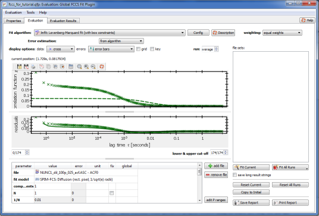
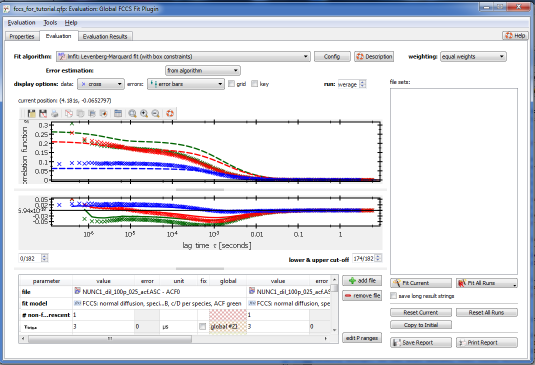
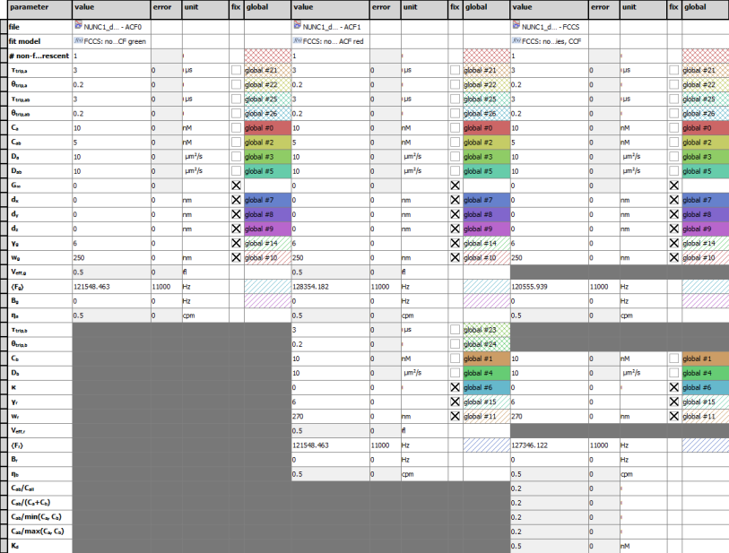
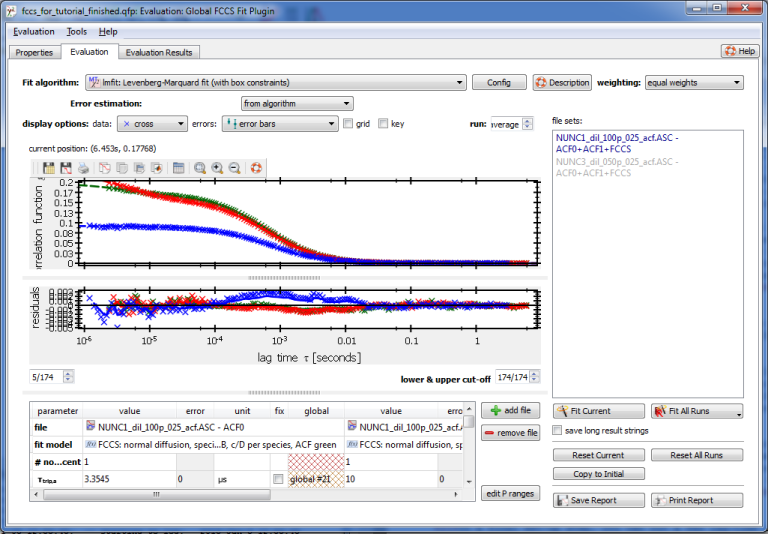
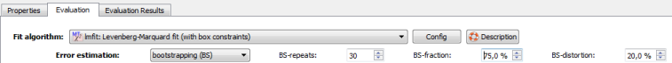
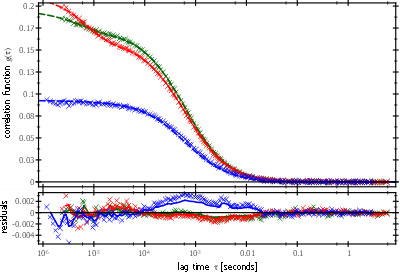
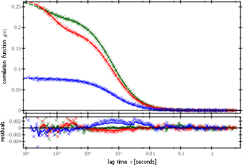

First you have to add all four files, that were mentioned above, to the project, by clicking on Data Items | Insert raw Data | FCS/DLS data | Insert FCS/DLS data from file:
For the FCCS fit, you now have to tell QuickFit, which files belong together, i.e. group the ACF0, ACF1 and FCCS for each measurement. This can be done by the RDR group and RDR role properties.
Click on Tools | Project Tools | edit groups, roles and folders. A new dialog will open, which looks like this:
Now you can open the FCCS fit, by double-clicking the evaluation item in the project tree. Initially the dialog displays a single correlation curve:

Setting up the Fit
The FCCS fit is designed to globally fit three model functions $(g_{gg}(\tau), g_{rr}(\tau), g_{gr}(\tau))$ to the three correlation curves (ACF0, ACF1, FCCS) from each measurement. These functions have some parameters in common, that are linked over the three model functions and the parameters are fitted simultaneously. So first you have to choose the model to be used. As this is a very simple sample (double-labeled linear dsDNA), a 1-component normal diffusion fit is usually enough. We can also assume, that three different types of particles (AB: green/red double-labeled, A: green single-labeled, B: red single-labeled) are enough to describe this sample.
The simples way to set up the evaluation object is via the menu Tools |configure for confocal FCCS ... | ... normal diffusion, species A+B+AB, c/D per species . Now the dialog will look as follows and display already the three correlation curves (ACF0: green, ACF1: red, FCCS: blue).

The table at the bottom of this dialog contains a list of all fit parameters:

The first column contains the name of the parameter. Then each set of five columns corresponds to one RDR/file (see first row). The second row shows the fit model to use for this RDR/file. In these two rows, you can also select a different file and a different fit model. For each RDR, the first column shows the current fit value, the second column the error determiend in the fit and the fourth column allows to fix certain parameters (i.e. they are not a fit parameter). The third column contains the unit of the fit parameter. Finally the fifth column (global) allows to link certain parameters together. All parameters, that are set to the same "global parameter" are linked. In the example above, e.g. the concentrations of species A ($(C_a)$, global #0), B ($(C_b)$, global #1), ... Parameters, that are missing/not necessary in a model are not shown for that file and the cells are darkly grayed. In this table you can also edit the current fit values and the configuration of the global parameters, by clicking into a table cell.
Linking Parameters
Since for this DNA sample, we can also assume, that the three species A, B, AB have the same diffusion coefficient (they are all 170bp dsDNA strands), we can also link the diffusion coefficients of all these species together. Therefore, you should now set all diffusion coefficients $(D_a, D_b, D_{ab})$ for all files/RDRs to the same global parameter, e.g. "global #3". Also put all the parameters given in the info box at the top of this page into the table. Note, that if you edit any parameter, all other paramters, that are linked to this one also change their value! Finally the table should look like this:
Setting Parameter Ranges
In some cases it may also be a good idea to set the parameter ranges. This prevents model parameters to go out of bound during the fit and may lead to more reasonable results. In the case discussed in this example, two changes of the parameter ranges are advisable:
- Diffusion coefficient ranges can be set to $(D\in\left[10^{-3}, 500 \right]\mathrm{\mu m^2/s})$, since we know the size of the DNA and can expect the diffusion coefficient to not be much larger than a few hundred μm2/s.
- The lower bound for concentrations should be set to $(10^{-10}\mathrm{nM})$, since the models, that we use here, can evaluate to undefined values (NAN/INF), if more than one concentration goes to 0. If this happens during fitting, the fit may also fail.
In order to set the parameter ranges, you have to press the button edit P ranges at the bottom right of the table. Then two additional columns appear for every RDR/file, which are named min and max. In these columns you can edit the parameter ranges.
So now, you should set the new parameter ranges, as listed above. Finally the table will look like in the figure below and you can switch off the range-edit-mode again, by a second click on the "edit P ranges" button.
Cutting Channels rom the Dataset
In a final set-up step, you can cut a few lag-time channels from the dataset. The first few channels of the autocorrelation curves are usually perturbed by the after-pulsing of the avalanche-photodiodes in the microscope. In our example, cutting 3-5 channels is enough. To do so, you can set the spin-box on the left, below the graphs to 3-5.
Fitting and Filesets
Now you can perform the fit, by clicking on the button Fit Current on the rhs of the dialog. The fit will be performed, using the current model parameters in the table as starting values. After that, the dialog will look like this:

You can notice two things:
- the fit models (dashed lines) fit the data (crosses) quite nicely and the residuals scatter around 0, although there are still some structures in the residuals. these are caused by the relatively strickt constraints on the fit model and possible inaccuracies, when determining the microscope parameters. Since in FCCS one is mostly concerned with the relative concentrations, as these measure the amount of association/binding, it is most important to niecly fit the amplitudes of the correlation functions, which is well achieved in this example.
- The list file sets on the rhs of the dialog now contains two entries. One is dark-blue and represents the current fit. The second one is gray and represents a guessed combination of files from the project. Each fit result is specific to a given combination of files/RDRs, which is called a fileset. So after a fit (or after a click on the menu Tools | Guess file sets), QuickFit tries to guess other combinations of files, that are similar to the current. In this example, QuickFit found, that three files from the same group with the roles ACF0, ACF1, FCCS were fitted. It then searches the project for other groups, that contain RDRs with the roles ACF0, ACF1 and FCCS. All the filesets, that QuickFit finds this way are then shown as grayed entries in the list. By clicking on one of these entries, the dialog will switch to these files and the respective fit results or initial values.
$$startbox_note$$
If you are not happy with the fit result, or the fit didn't converge, you can repeat the fit several times, but each time, altering the initial parameters a bit. When you click on "Fit Current" a second time, the fit will be re-done, but this time using the last fit results as starting values. So you can change some of the parameters in the table to more accurate values and redo the fit. If this also doesn't help, it may also be adviseable to reset the fit completely, by clicking on Reset Current. This will delete the last fit result and go back to the initial values, we set above. Then you can alter these and redo the fit. Sometimes it also helps to use another fit algorithm, such as $$fitalgorithm:name:fit_simanneal$$, as that algorithm uses a stochastic approach, which sometimes converges better.
Also note, that some fitting algorithms (such as $$fitalgorithm:name:fit_lmfit$$, which is used here) may have problems, when fit parameters are initially at the parameter boundaries (e.g. a triplet decay time is at 10μs). Then you can reset them to a more senseful value and redo the fit.
It is also possible to initially fix some parameters to reasonable values and then fit, release the fixing and fit again. This way, you can force the fit algorithm a little bit in a certain direction.
Experience also showed, that convergence of global FCCS fits can be improved, if the initial concentrations before the fit are set lower than expected (i.e. the initial model functions have a higher amplitude, than expected).
$$endbox$$
Fitting more Filesets
Our test project contains - as mentioned - two measurements. Both were taken on the same type of sample (170bp DNA), but with different mixtures of single- and double-labeled strands. Still the fit results of the first fileset (see last step), may also be good starting values for the next step. Therefore you can click on the button Copy to Initial to use the current fit results as initial values for any further fit $$note:If a fileset has not yet been fitted (grayed filesets in the list), these initial parameters will be used as starting values for the fit. If a fit has already been performed (blue/black filesets), the last fit result will be used as starting value. You can discard it and go back to the initial values, by clicking on "Reset Current" for that fileset.$$
So to also fit the second measurement, perform these steps:
- click on "Copy to Initial" for the first fileset.
- click on the second, grayed, fileset in the list.
- Now the second fileset, with the old fit results should be displayed (which do not fit). Click on "Fit Current" to also fit the second fileset. If the fits do not converge immediately, try to repeat the fit, by clicking on "Fit Current" again.
Fit Errors
The fit algorithm, that was used so far ($$fitalgorithm:name:fit_lmfit$$) does not return errors for the fit parameters, so the error columns are still empty. To overcome this, we can use bootstrapping to estimate the fit parameter errors. To do so, choose the error estimation mode bootstrapping (BS) at the top of the window:

This will cause the plugin to repeat each fit BS-repeats times. Each time only 75% (BS-fraction) of the data points in the correlation curves are used and the initial parameters are varied by 20% (BS-distortion) before each fit. Then the plugin returns the best fit value and the standard deviation obtained from all these 30 fits as errors.
Now refit each of the two filesets and observe the non-zero errors in the table.
Results of this Tutorial
Finally we can collect some results from this tutorial: The following figure shows the data and final fits to each of the two measurements. Observe, how the blue cross-correlation function has a lower amplitude (relative to the ACFs) in the left graph. This is due to the higher amount of single-labeled DNA strands in the second sample.

The following table summarizes the fit results obtained in the fits:
| sample |
$(D)$ |
$(c_a)$ |
$(c_b)$ |
$(c_{ab})$ |
$(c_{ab}/(c_a+c_b+c_{ab}))$ |
| sample 1 (100p) |
$((35.6\pm0.1)\mathrm{\mu m^2/s})$ |
$$math:(5.35\pm0.01)\mathrm{nM}$$ |
$$math:(5.35\pm0.01)\mathrm{nM}$$ |
$$math:(5.76\pm0.01)\mathrm{nM}$$ |
$$math:35\%$$ |
| sample 2 (50p) |
$$math:(35.1\pm0.1)\mathrm{\mu m^2/s}$$ |
$$math:(5.65\pm0.01)\mathrm{nM}$$ |
$$math:(6.2\pm0.01)\mathrm{nM}$$ |
$$math:(2.78\pm0.01)\mathrm{nM}$$ |
$$math:19\%$$ |